Feel It
Feel The Change
Smashed for the bold, built for the hungry. Every crispy edge and juicy layer rules.
[商品写真：最終CTA用]

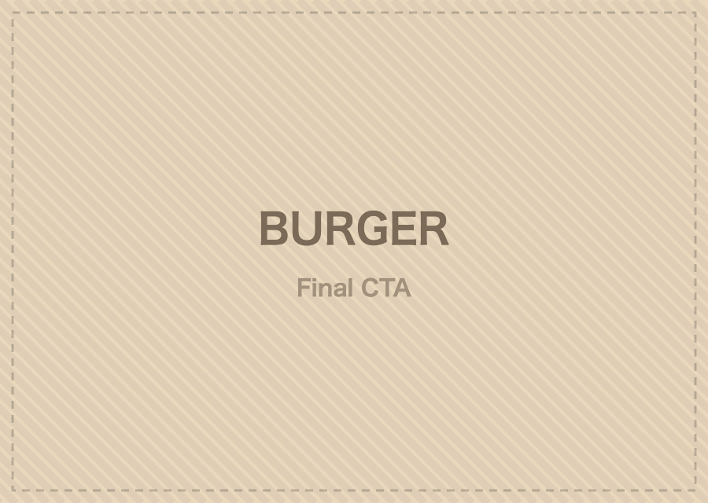
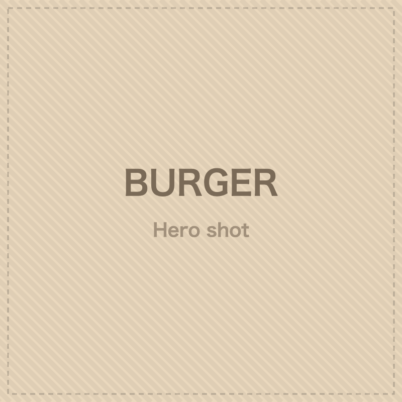
Smashed hot on the flat top, our patties lock in ultimate juiciness under a caramelized crust.
Topped with melted cheddar and a glaze crafted to satisfy your cravings, every single time.
SMASHD is back and bolder than ever. Honoring our roots, we bring the ultimate smashed experience — hot, loaded, and crafted fresh.
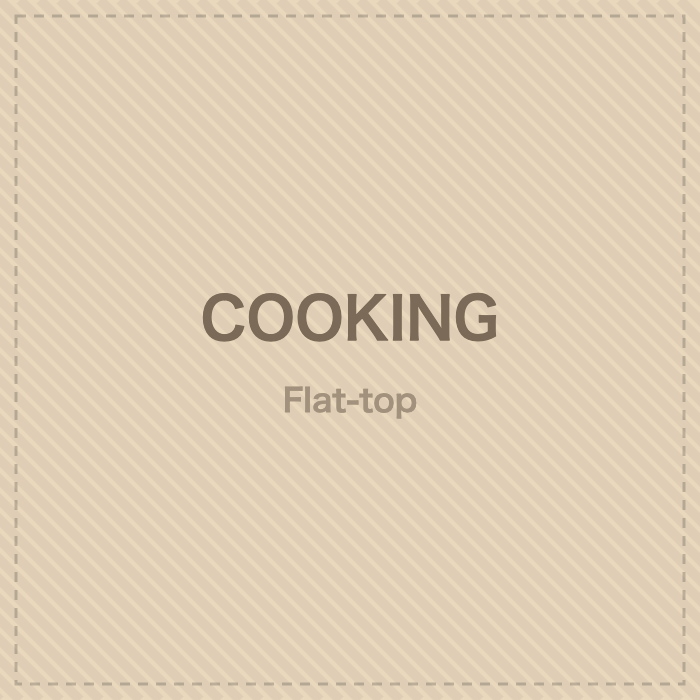
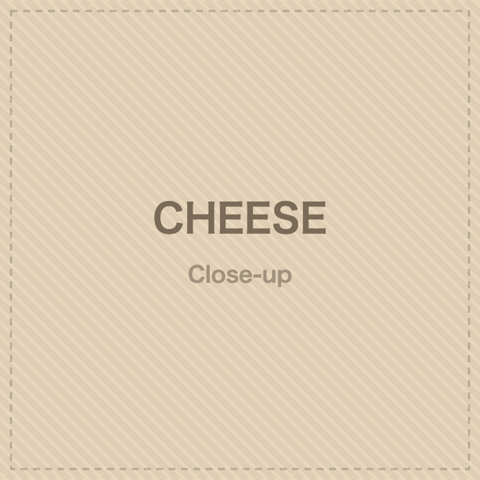
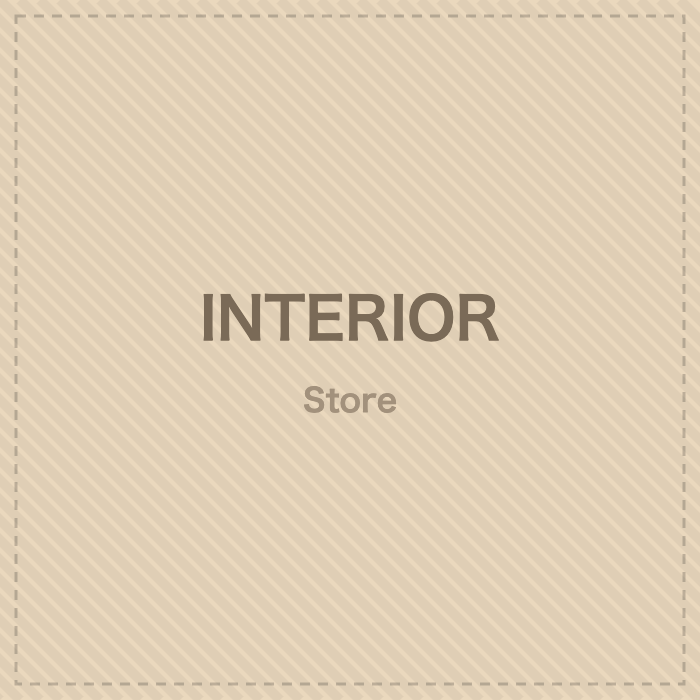
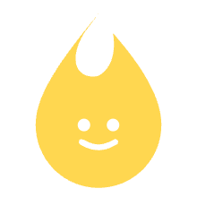
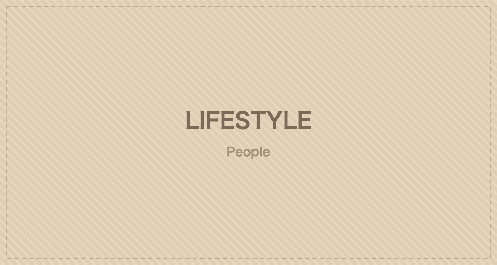
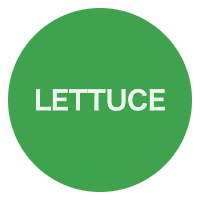
packed with [トマト]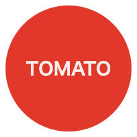
signature [チーズ]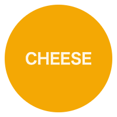
flavor [パティ]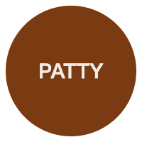
Freshly packed, ready to go wherever you crave — from our flat-top to any corner of the globe.
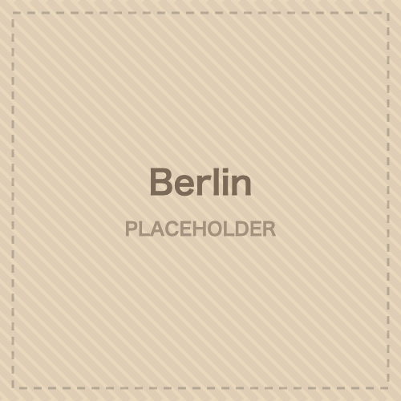
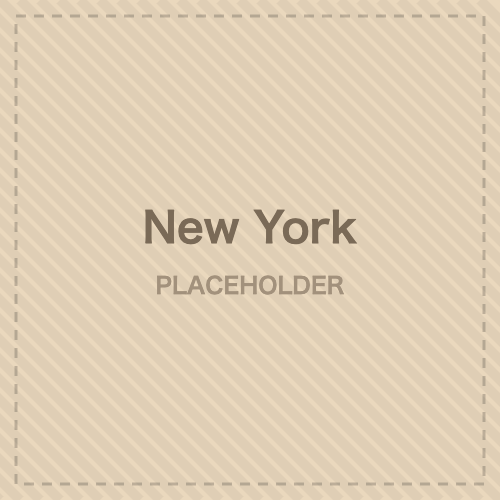
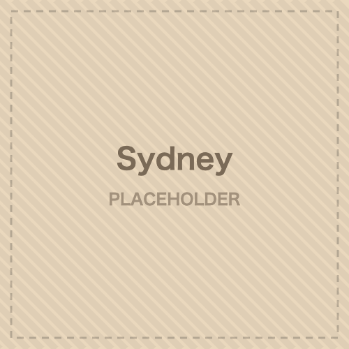
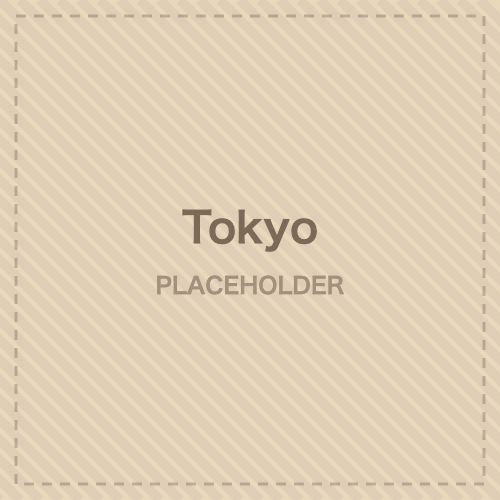
Smashed for the bold, built for the hungry. Every crispy edge and juicy layer rules.
